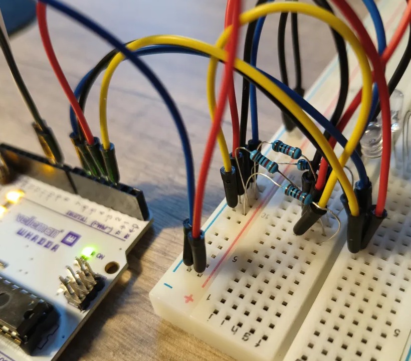

| test | |
| Introductie | |
| Spel 1 |
Introductie
Wij hebben gekozen om het spel Keep Talking and Nobody explodes te maken.
Module 1: Het juiste draad doorknippen
Het programma:
const int wirePins[] = {2, 3, 4, 5}; // draadjes 1–4
const int correctWire = 2; // draad 2 (pin 2) is correct
const int redLed = 8;
const int greenLed = 9;
void setup() {
Serial.begin(9600);
for (int i = 0; i < 4; i++) {
pinMode(wirePins[i], INPUT);
}
pinMode(redLed, OUTPUT);
pinMode(greenLed, OUTPUT);
digitalWrite(redLed, LOW);
digitalWrite(greenLed, LOW);
}
void loop() {
// Check of een draad eruit is (LOW)
bool anyPulled = false;
bool correctPulled = false;
for (int i = 0; i < 4; i++) {
int state = digitalRead(wirePins[i]);
if (state == LOW) { // draad los
anyPulled = true;
if (wirePins[i] == correctWire) {
correctPulled = true;
}
}
}
if (anyPulled) {
if (correctPulled) {
digitalWrite(greenLed, HIGH);
digitalWrite(redLed, LOW);
} else {
digitalWrite(redLed, HIGH);
digitalWrite(greenLed, LOW);
}
} else {
// Alle draden zijn weer aangesloten
digitalWrite(redLed, LOW);
digitalWrite(greenLed, LOW);
}
delay(100); // kleine vertraging
}
Fysieke opstelling:
Het schema (in TinkerCAD gemaakt):
Module 2: Knop indrukken wanneer er een bepaald cijfer word weergegeven.
Het programma:
// Game met 2 aparte 7-segment displays en een knop
const int segmentPins[7] = {2, 3, 4, 5, 6, 7, 8};
const int digitPins[2] = {9, 10}; // 0 = tientallen, 1 = eenheden
const int buttonPin = A0;
int targetDigit = 7;
int currentNumber = 0;
unsigned long speed = 700;
unsigned long lastUpdate = 0;
bool gameRunning = true;
const byte digits[10] = {
0b00111111, // 0
0b00000110, // 1
0b01011011, // 2
0b01001111, // 3
0b01100110, // 4
0b01101101, // 5
0b01111101, // 6
0b00000111, // 7
0b01111111, // 8
0b01101111 // 9
};
void setup() {
for (int i = 0; i < 7; i++) {
pinMode(segmentPins[i], OUTPUT);
}
for (int i = 0; i < 2; i++) {
pinMode(digitPins[i], OUTPUT);
}
pinMode(buttonPin, INPUT_PULLUP);
}
void loop() {
if (!gameRunning) {
displayNumber(88); // fout = alles aan
return;
}
// update teller
if (millis() - lastUpdate >= speed) {
lastUpdate = millis();
currentNumber = (currentNumber + 1) % 100; // 00 tot 99
}
// Toon display continu (multiplex)
for (int i = 0; i < 2; i++) {
displayDigit(i);
}
// Knopcontrole
if (digitalRead(buttonPin) == LOW) {
delay(50); // debounce
if (digitalRead(buttonPin) == LOW) {
int lastDigit = currentNumber % 10;
if (lastDigit == targetDigit) {
if (speed > 200) speed -= 50;
} else {
gameRunning = false;
}
while (digitalRead(buttonPin) == LOW); // wacht tot knop los
}
}
}
void displayDigit(int digitIndex) {
int num = (digitIndex == 0) ? currentNumber / 10 : currentNumber % 10;
byte segments = digits[num];
for (int i = 0; i < 7; i++) {
digitalWrite(segmentPins[i], bitRead(segments, i));
}
digitalWrite(digitPins[digitIndex], LOW); // actief
delay(3);
digitalWrite(digitPins[digitIndex], HIGH); // uit
}
void displayNumber(int num) {
for (int i = 0; i < 50; i++) { // toon getal kort
for (int d = 0; d < 2; d++) {
int val = (d == 0) ? num / 10 : num % 10;
byte segs = digits[val];
for (int i = 0; i < 7; i++) {
digitalWrite(segmentPins[i], bitRead(segs, i));
}
digitalWrite(digitPins[d], LOW);
delay(3);
digitalWrite(digitPins[d], HIGH);
}
}
}
Fysieke opstelling:
Het schema (in TinkerCAD gemaakt):
Spel 1:
Uitleg:
In het eeerste spel, moet de speler op de knop drukken wanneer de nummer 7 op de 1ste positie wordt weergegeven.
Code:
// PINNEN
const int segmentPins[7] = { 2, 3, 4, 5, 6, 7, 8 };
const int digitPins[4] = { 9, 10, 11, 12 };
const int buttonPin = A0; // Zorg dat je knop zit tussen A0 en GND
const int buttonLedPin = A1;
const int buzzerPin = 13;
// CIJFERS 0–9
const byte numbers[10][7] = {
{ 1, 1, 1, 1, 1, 1, 0 }, { 0, 1, 1, 0, 0, 0, 0 }, { 1, 1, 0, 1, 1, 0, 1 },
{ 1, 1, 1, 1, 0, 0, 1 }, { 0, 1, 1, 0, 0, 1, 1 }, { 1, 0, 1, 1, 0, 1, 1 },
{ 1, 0, 1, 1, 1, 1, 1 }, { 1, 1, 1, 0, 0, 0, 0 }, { 1, 1, 1, 1, 1, 1, 1 },
{ 1, 1, 1, 1, 0, 1, 1 }
};
// LETTERS A–Z
const byte letters[26][7] = {
{ 1, 1, 1, 0, 1, 1, 1 }, { 0, 0, 1, 1, 1, 1, 1 }, { 1, 0, 0, 1, 1, 1, 0 },
{ 0, 1, 1, 1, 1, 0, 1 }, { 1, 0, 0, 1, 1, 1, 1 }, { 1, 0, 0, 0, 1, 1, 1 },
{ 1, 0, 1, 1, 1, 1, 0 }, { 0, 1, 1, 0, 1, 1, 1 }, { 0, 1, 1, 0, 0, 0, 0 },
{ 0, 1, 1, 1, 0, 0, 0 }, { 0, 0, 1, 0, 1, 1, 1 }, { 0, 0, 0, 1, 1, 1, 0 },
{ 1, 1, 1, 0, 1, 1, 0 }, { 0, 0, 1, 0, 1, 0, 1 }, { 1, 1, 1, 1, 1, 1, 0 },
{ 1, 1, 0, 0, 1, 1, 1 }, { 1, 1, 1, 0, 0, 1, 1 }, { 0, 0, 0, 0, 1, 0, 1 },
{ 1, 0, 1, 1, 0, 1, 1 }, { 0, 0, 0, 1, 1, 1, 1 }, { 0, 1, 1, 1, 1, 1, 0 },
{ 0, 1, 1, 1, 1, 1, 0 }, { 0, 1, 1, 1, 1, 1, 0 }, { 0, 1, 1, 0, 1, 1, 1 },
{ 0, 1, 1, 0, 0, 1, 1 }, { 1, 1, 0, 1, 1, 0, 1 }
};
// BOOM letters codes
int boomCodes[4] = { 100 + ('B' - 'A'), 100 + ('O' - 'A'), 100 + ('O' - 'A'), 100 + ('M' - 'A') };
// VARIABELEN
int digitsToShow[4];
unsigned long previousMillis = 0;
int totalSeconds = 0;
bool firstCountdownFinished = false;
bool explosionTriggered = false;
int bombSeconds = 4 * 60;
void setup() {
for (int i = 0; i < 7; i++) {
pinMode(segmentPins[i], OUTPUT);
digitalWrite(segmentPins[i], LOW);
}
for (int i = 0; i < 4; i++) {
pinMode(digitPins[i], OUTPUT);
digitalWrite(digitPins[i], HIGH);
}
pinMode(buttonPin, INPUT_PULLUP); // !! Interne pull-up voor knop
pinMode(buttonLedPin, OUTPUT);
digitalWrite(buttonLedPin, LOW);
pinMode(buzzerPin, OUTPUT);
digitalWrite(buzzerPin, LOW);
Serial.begin(9600);
}
void loop() {
unsigned long currentMillis = millis();
if (explosionTriggered) {
displayExplosionText(); // Vervanging van scrollfunctie
return;
}
if (!firstCountdownFinished) {
unsigned long interval;
if (totalSeconds < 20) interval = 1000;
else if (totalSeconds < 40) interval = 700;
else if (totalSeconds < 60) interval = 550;
else if (totalSeconds < 80) interval = 350;
else interval = 300;
if (currentMillis - previousMillis >= interval && totalSeconds < 100) {
previousMillis = currentMillis;
totalSeconds++;
checkButton();
if (totalSeconds >= 100) {
firstCountdownFinished = true;
previousMillis = currentMillis;
}
int minutes = totalSeconds / 60;
int seconds = totalSeconds % 60;
digitsToShow[0] = 0;
digitsToShow[1] = minutes % 10;
digitsToShow[2] = seconds / 10;
digitsToShow[3] = seconds % 10;
Serial.println(digitsToShow[3]);
}
displayDigits();
} else {
if (currentMillis - previousMillis >= 1000 && bombSeconds > 0) {
previousMillis = currentMillis;
bombSeconds--;
checkButton();
if (bombSeconds == 0) {
triggerExplosion();
return;
}
int minutes = bombSeconds / 60;
int seconds = bombSeconds % 60;
digitsToShow[0] = 0;
digitsToShow[1] = minutes % 10;
digitsToShow[2] = seconds / 10;
digitsToShow[3] = seconds % 10;
}
displayDigits();
}
}
void checkButton() {
int buttonState = digitalRead(buttonPin);
if (digitsToShow[3] == 7) {
// Je moet de knop ingedrukt houden (buttonState == LOW)
if (buttonState == LOW) {
Serial.println("✅ Correcte druk op 7!");
digitalWrite(buttonLedPin, HIGH);
delay(100);
digitalWrite(buttonLedPin, LOW);
} else if (buttonState == HIGH){
Serial.println("❌ Niet gedrukt op 7! BOM ONTPLOFT!");
triggerExplosion();
}
} else {
// Als het laatste cijfer NIET 7 is, mag je de knop niet indrukken
if (buttonState == LOW) {
Serial.println("❌ Fout gedrukt! BOM ONTPLOFT!");
triggerExplosion();
}
}
}
void displayDigits() {
for (int i = 0; i < 4; i++) {
showDigit(i, digitsToShow[i]);
delay(3);
digitalWrite(digitPins[i], HIGH);
}
}
void showDigit(int digitIndex, int code) {
digitalWrite(digitPins[digitIndex], LOW);
const byte* pattern;
if (code >= 0 && code <= 9) {
pattern = numbers[code];
} else if (code >= 100 && code < 126) {
pattern = letters[code - 100];
} else {
pattern = NULL;
}
for (int s = 0; s < 7; s++) {
digitalWrite(segmentPins[s], (pattern ? pattern[s] : 0) ? HIGH : LOW);
}
}
void triggerExplosion() {
explosionTriggered = true;
Serial.println("üí• BOOM üí•");
for (int i = 0; i < 10; i++) {
digitalWrite(buzzerPin, HIGH);
digitalWrite(buttonLedPin, HIGH);
delay(200);
digitalWrite(buzzerPin, LOW);
digitalWrite(buttonLedPin, LOW);
delay(200);
}
// Laat BOOM zien, blijf het tonen
while (true) {
for (int i = 0; i < 4; i++) {
showDigit(i, boomCodes[i]);
delay(250);
digitalWrite(digitPins[i], HIGH);
}
}
}
void displayExplosionText() {
for (int i = 0; i < 4; i++) {
showDigit(i, boomCodes[i]);
}
}